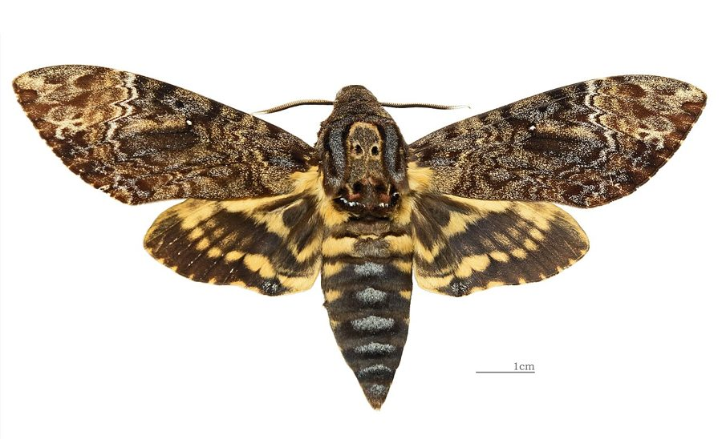

कालमुख पतंगाGreater Death's Head Hawkmoth
Acherontia lachesis · Sphingidae · INS-0034

- Scientific name
- Acherontia lachesis Fabricius, 1798
- Family
- Sphingidae
- Hindi
- कालमुख पतंगा
- Status here
- native
- IUCN
- not evaluated
When to look कब देखें
Present all year.
कालमुख पतंगा / Greater Death's Head Hawkmoth
Acherontia lachesis Fabricius, 1798 — Sphingidae
कालमुख पतंगा (ग्रेटर डेथ्स हेड हॉकमोथ) — पूर्वी उत्तर प्रदेश में पाया जाने वाला एक अत्यंत बड़ा, भारी और विस्मयकारी निवासी पतंगा (moth) है। इसके वक्ष (thorax) के ऊपरी हिस्से पर पीले और काले रंग से बनी एक इंसानी खोपड़ी जैसी आकृति (skull-like pattern) होती है, जिसके कारण इसे "कालमुख" या "खोपड़ी वाला पतंगा" कहा जाता है। यह रात के समय सक्रिय होता है और अक्सर घरों की रोशनी की ओर आकर्षित होता है। परेशान करने पर यह अपने मुँह (proboscis) से हवा को तेज़ी से बाहर धकेलकर एक तीखी चीं-चीं जैसी आवाज़ (loud squeak) उत्पन्न करता है। इसके बहुत बड़े, चमकीले पीले या हरे रंग के कैटरपिलर फसलों और जंगली पौधों जैसे बैंगन, तिल और कनेर की पत्तियों को खाते हैं, जबकि वयस्क पतंगे कभी-कभी मधुमक्खियों के छत्ते में घुसकर शहद चुराते हैं।
Quick Identification त्वरित पहचान
| Feature | Description |
|---|---|
| Size | Very large, heavy moth; body length 50–60 mm; wingspan 100–135 mm |
| Thoracic Mask | A prominent, pale yellow-and-black pattern resembling a human skull on the thorax |
| Forewings | Mottled dark brown, black, and grey with a small white discal spot; resembles tree bark |
| Hindwings | Bright yellow at the base with two broad, black bands across the outer margins |
| Abdomen | Thick, yellow with black transverse bands and a central blue-grey stripe |
| Sound | Produces a loud, high-pitched squeak when disturbed or handled |
Field tip: Look for a massive, dark moth resting flat on walls near outdoor lights during autumn nights. Observe the distinct yellow-and-black skull-like mask on its back. If gently touched, it will raise its wings and emit a surprising, high-pitched squeaking sound.
Morphology आकारिकी
Biometrics (typical measurements for adult specimens in local gardens):
| Measurement | Range |
|---|---|
| Body length | 50.0–60.0 mm |
| Wingspan | 100.0–135.0 mm |
Body details: The adult moth is large and stout-bodied. The head bears a short, thick proboscis and short, brush-like antennae. The thorax is blackish-grey with the characteristic yellow skull-shaped marking. The forewings are long, narrow, and cryptically colored with dark brown, grey, and black patches. The hindwings are bright yellow with a black submarginal band and a black marginal band. The abdomen is robust, banded with black and yellow, and features a broad, longitudinal blue-grey stripe running down the center of the dorsal side.
Behaviour & Ecology व्यवहार और पारिस्थितिकी
Nocturnal robber and squeaker.
- Acoustic defense: When threatened, the moth draws in air and expels it rapidly through its proboscis, vibrating a small flap (the epipharynx). This produces a sharp, audible squeak that startles potential predators.
- Honey robbing: Adults feed on honey. They enter the hives of honey bees (such as [INS-0007 Asian Honey Bee]) and use chemical mimicry (matching the scent of bees) to bypass guard bees. They pierce honey cells with their short, robust proboscis to drink.
- Nocturnal flight: Active only after dark, flying with a strong, rapid, hovering flight.
Ecological Role पारिस्थितिक भूमिका
Herbivore and nocturnal pollinator.
- Pollinator: Adults visit deep-throated flowers at night, aiding in the pollination of various garden creepers and crops.
- Foliage consumer: The larvae consume significant amounts of leaf tissue from Solanaceae and other plant groups, acting as primary consumers.
Life Cycle / Phenology जीवन चक्र
- Breeding: Peak breeding occurs during the wet and humid months of August to October.
- Egg laying: The female lays large, pale green, oval eggs singly on the underside of host plant leaves. Eggs hatch in 3–5 days.
- Pupation: The mature larva burrows 5–10 cm into loose soil near the host plant and pupates inside a smooth, dark reddish-brown earthen chamber. The pupal stage lasts 18–24 days in summer.
Larval (Caterpillar) Stage
- Larval appearance: The caterpillar is massive, growing up to 100–120 mm long. It occurs in three colour phases: bright green, canary-yellow, or greyish-brown. The body features seven pairs of diagonal blue-violet stripes on the sides, and a distinct, rough, yellow anal horn that is curved downwards and then upwards at the tip.
- Host plants: Feeds heavily on sesame, brinjal, jasmine, and oleander.
- Caterpillar duration: Grows through 5 instars over 20–25 days before pupation.
Host Plants or Prey आहार
Larval host plants:
- Sesame (Sesamum indicum [FLR-0059 Sesame]), Brinjal (Solanum melongena), Potato (Solanum tuberosum), Yellow Oleander (Cascabela thevetia [FLR-0062 Yellow Oleander]), and Jasmine (Jasminum species).
Adult diet:
- Stolen honey from honey bee hives.
- Nectar from night-blooming flowers.
Predators / Natural Enemies शत्रु
- Birds: House Crows (such as [BRD-0027 House Crow]) capture and dismember them if found resting on walls during early morning.
- Mammals: Insectivorous bats hunt the flying moths at night.
- Parasitoid Wasps: Ichneumonid wasps lay eggs in the caterpillar, their larvae consuming the pupa from within.
Agricultural / Human Relevance कृषि प्रासंगिकता
Minor agricultural pest and cultural myth.
- Crop impact: Larvae feed on sesame and brinjal leaves, but are rarely abundant enough in Basti to cause significant economic damage.
- Superstition: The skull-like marking on the thorax is viewed with superstition in some villages, where it is feared as an omen of bad luck. Educational campaigns emphasize that the insect is entirely harmless to humans.
Expected Locally स्थानीय रूप से अपेक्षित
Not a field record. Written from published accounts for eastern Uttar Pradesh. No confirmed local sighting yet — if you have seen it, that is what the atlas needs.
अभी तक स्थानीय पुष्टि नहीं। यह विवरण प्रकाशित स्रोतों से है, किसी अवलोकन से नहीं।
Frequently observed in residential blocks of Basti Sadar, Harraiya, and Khalilabad during September. Adults are regularly attracted to household verandah lights during humid monsoon nights, where they cause concern due to their loud squeaking when moved.
Distribution वितरण
Global range: Widespread throughout South Asia, East Asia, and Southeast Asia, from India and Sri Lanka to China, Japan, and Indonesia.
In India: Found throughout the plains and forested tracts of the country.
In Uttar Pradesh: Common resident across all rural and urban districts.
In Basti district / eastern UP: Observed in all agricultural and residential blocks.
Research Questions शोध प्रश्न
Anyone can investigate these | कोई भी इन प्रश्नों की जाँच कर सकता है
- How do bees in Basti hives react when a Death's Head Hawkmoth enters to rob honey? / जब एक कालमुख पतंगा शहद चुराने के लिए बस्ती के छत्तों में प्रवेश करता है, तो मधुमक्खियाँ उस पर क्या प्रतिक्रिया देती हैं? — Monitor hive entrances at night.
- Does the sound intensity of the moth's squeak change with different levels of physical disturbance? / क्या शारीरिक छेड़छाड़ के विभिन्न स्तरों के साथ पतंगे की चीं-चीं (squeak) की आवाज़ की तीव्रता बदलती है? — Measure audio frequency and decibels of defensive squeaks.
- What is the survival rate of the pupa when placed at different depths in Basti sandy-clay soil? — Test pupation success at 5 cm, 10 cm, and 15 cm depths in test boxes.
- Which larval host plant leads to the fastest caterpillar growth and pupal weight? — Compare development rates on sesame vs. oleander leaves.
- Can children find and photograph the large, colorful caterpillars on garden jasmine or oleander bushes? — A search activity to identify larval camouflage success.
Similar Species मिलती-जुलती प्रजातियाँ
| Species | Key Difference | हिंदी |
|---|---|---|
| Acherontia styx (Lesser Death's Head Hawkmoth) | Smaller wingspan (~90 mm); thoracic skull pattern is less defined; hindwings have narrower black bands | छोटा कालमुख पतंगा — छोटा आकार |
| Acherontia atropos (African Death's Head Hawkmoth) | Widespread in Europe and Africa; does not occur in India | अफ्रीकी कालमुख पतंगा — यूरोप/अफ्रीका में |
| Daphnis nerii (Oleander Hawkmoth) | Wings and body patterned with green, white, and pink swirls; lacks the skull pattern | कनेर का हॉकमोथ — हरा-सफेद ज़िग-ज़ैग पैटर्न |
Field rule: Massive size (wingspan >100 mm), dark mottled forewings, and a prominent yellow-and-black human skull-like pattern on the thorax identify the Greater Death's Head Hawkmoth.
Taxonomy & Classification वर्गीकरण
Original description. Johan Christian Fabricius described the Greater Death's Head Hawkmoth as Sphinx lachesis in 1798 in Entomologia Systematica... Supplementum (p. 434). The type locality was India. The genus name Acherontia refers to the Acheron, the river of pain in Greek mythology. The specific name lachesis refers to Lachesis, one of the three Fates in Greek mythology who measures the thread of life.
Subspecies. Monotypic — no subspecies are currently recognized.
Family and order placement. Placed in the order Lepidoptera, suborder Glossata, family Sphingidae (hawkmoths), subfamily Sphinginae.
Phylogenetic notes. Acherontia lachesis is closely related to Acherontia styx, representing an Old World lineage of hawkmoths that evolved acoustic signaling systems and specialized behavior for honey-robbing.
IUCN status rationale. Not evaluated (NE) by the IUCN Red List. It is common and widely distributed across South Asia, with no immediate conservation threats.
Photo Gallery फोटो गैलरी
References संदर्भ
- Fabricius, J. C. (1798). Entomologia Systematica emendata et aucta... Supplementum. Hafniae: Proft et Storch, p. 434. [original description]
- Hampson, G. F. (1892). The Fauna of British India, including Ceylon and Burma. Moths. Vol. 1. Taylor and Francis, London, p. 67.
- Mani, M. S. (1968). General Entomology. Oxford & IBH Publishing Co., New Delhi.
- Bell, T. R. D., & Scott, F. B. (1937). The Fauna of British India, including Ceylon and Burma. Moths. Vol. 5. Sphingidae. Taylor and Francis, London.
- ZSI Checklist — Sphingidae of Uttar Pradesh (2015).
- GBIF Occurrence Data — Acherontia lachesis, Uttar Pradesh (2010–2025).
Source file: species/fauna/insects/deaths_head_hawkmoth.md